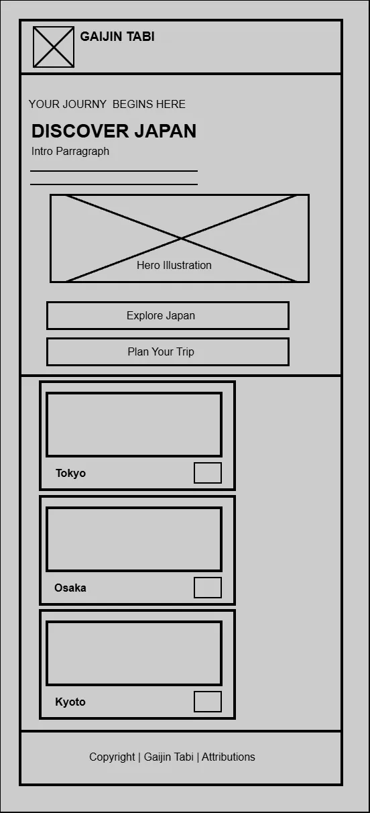
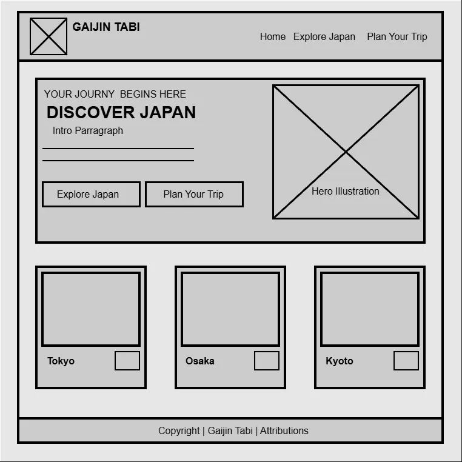

Charcoal Black
#202124
Header, navigation, body text, and decorative patterns.
Individual Project Site Plan
WDD231 — Individual Project
A planning document for my personal project site
I chose the name Gaijin Tabi because it represents foreigners traveling to Japan. Gaijin means foreigner, and Tabi means journey or travel.
My website, Gaijin Tabi, provides a travel guide and trip-planning platform for international visitors traveling to Japan. The website is designed for both first-time visitors and experienced travelers.
The website will provide information about popular attractions, destinations, transportation options, and estimated travel expenses in Tokyo, Osaka, and Kyoto.
Visitors will be able to explore destinations, filter attractions, save their favorite places, and use a trip-planning form to estimate their travel budget.
The following questions represent the needs and interests of the website's target audience.
The color scheme is inspired by traditional Japanese art, particularly The Great Wave off Kanagawa by Katsushika Hokusai.
Deep blue and warm sand tones are combined with Japanese crimson, charcoal black, and neutral colors to create a modern visual identity inspired by Japan.
#202124
Header, navigation, body text, and decorative patterns.
#193B70
Headings, secondary buttons, destination titles, and footer backgrounds.
#B91C1C
Logo, primary buttons, active navigation, and decorative accents.
#E8C69C
Hero backgrounds, highlighted sections, and decorative elements.
#F2D9BC
Featured destinations and secondary section backgrounds.
#F8F5EF
General page backgrounds and form sections.
#FFFFFF
Content cards, form fields, and text displayed on dark backgrounds.
The website will use two Google Fonts to provide a modern, readable design while supporting Japanese characters.
Discover Japan.
Explore extraordinary destinations, discover Japanese culture, and plan your next adventure.
外人旅 — 日本へようこそ
Noto Sans JP will be used for Japanese characters, destination names, cultural references, and Japanese branding.
東京・大阪・京都

